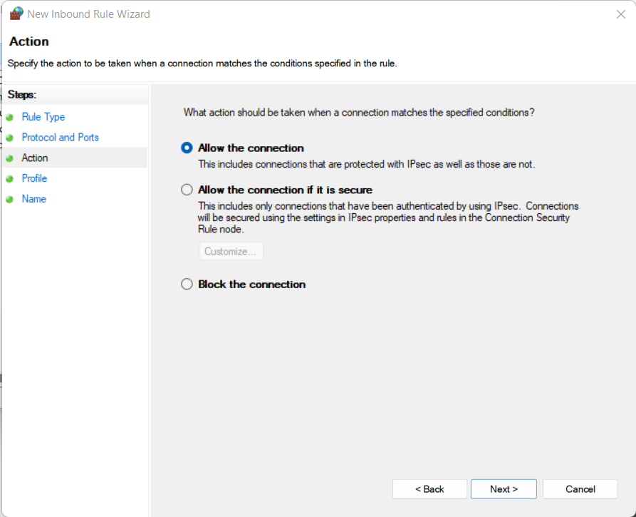

#
Pozi Server
#
About
Pozi Server is the software in the Pozi Enterprise suite that enables internal datasets to be served to Pozi users within the organisation’s network.
Pozi Server is installed on premise, enabling it to serve local data directly to an internal user's browser without any data leaving the network. For users to access these datasets, they must be connected to the network, either directly or via a VPN.
Pozi Enterprise sites utilise their internal network for connections to private data sources. Pozi Enterprise Cloud sites utilise Azure AD Application Proxy to handle these connections.
With Pozi Server installed and configured, the Pozi web application can access internal data in the same way it accesses external APIs from other providers (eg, DataVic, data.gov.au, HERE, ArcGIS Online, various government web services, etc).
The Pozi web application aggregates internal and external data in the browser in a seamless experience for staff.
Pozi Server is configured on your network with DNS rules that enable local users to access its API via a dedicated URL (typically [yourservername].pozi.com).
- when a user inside the corporate network uses Pozi, any request to
[yourservername].pozi.comis directed by the local DNS rules to the internal server on which Pozi Connect Server is installed, and Pozi Connect Server responds with the requested data - when a user outside the corporate network uses Pozi, any request to
[yourservername].pozi.comquietly fails because it's not a valid endpoint on the internet (however any data from any public data sources will load in the app as normal)
IT managers maintain control over internal user access to Pozi Connect Server by configuring the network DNS and firewall rules. For example, access to Pozi Server can be restricted for specific users or groups of users with a group policy or firewall rules that blacklists the [yourservername].pozi.com endpoint.
#
Download and Install
- download the Pozi Connect Server installer
- run installer and follow prompts
The Pozi Server application is often referred to as "Pozi Connect Server". This name came about from our attempt to combine our two on-premise applications, Pozi Connect and Pozi Server, into one application. We have since abandoned that approach, but the hybrid name persists in the Pozi Server interface and documentation.
Pozi Server (what this page is about) is the API that the Pozi web app uses for accessing the local data. It runs as a Windows service (PoziConnectServer), and auto-updates with the help of the Updater (PoziConnectUpdater) service.
Pozi Connect is the desktop application used by Victorian municipalities for generating property data change reports (M1s). It is distributed as a Windows installer, and councils are notified by email when there are new versions available to download and install.
#
Enable local permissions
The instructions below assume that Pozi Server has been installed in the default location. If it has been installed elsewhere, substitute your path in place of C:\Program Files (x86)\Pozi in all subsequent steps.
The C:\Program Files (x86)\Pozi folder will be created by the installation process with limited permissions for editing. To enable your user account to make changes within the userdata folder, do the following:
- in Windows Explorer, navigate to
C:\Program Files (x86)\Pozi - right click
userdatafolder - Properties > Security > Edit > Add > Locations > select Entire Directory > OK
- type part of the user name of the support account, then click Check Names
- select your name and click OK, then click OK again
- tick Modify / Allow, then click OK
- click OK
Similarly, for the service account under which the PoziConnectServer service is running, enable modify permissions on the C:\Program Files (x86)\Pozi\server\server.log file. This will enable the service to write to the log file.
#
DNS Configuration
#
For Local User
During the installation, the server/PC's hosts file is automatically updated to forward any requests for local.pozi.com to the local machine at 127.0.0.1.
127.0.0.1 local.pozi.comThis enables the local user to use the local Pozi Server instance as a web server. This is useful for a standalone implementation or for demonstration purposes.
#
For Network Users
To enable all PCs across the network to communicate with the Pozi Server instance, the network Domain Name System (DNS) needs to be configured so that any requests to [yourservername].pozi.com resolve to the IP address of the server on which Pozi Server is installed.
Ask your network administrator to add the lookup (eg [yourservername].pozi.com) as a "forward lookup zone (primary)" then create an "A record with no hostname" (matches zone) to target server.

If your network setup uses OpenVPN, you may need to add the following line to the OpenVPN client configuration file:
dhcp-option DOMAIN [yourservername].pozi.com
To confirm the DNS is configured correctly, open a command prompt window and ping [yourservername].pozi.com. It should return a reply from the server on which Pozi Server is installed.
When this is established, you can remove the local.pozi.com entry in the hosts file that was created during the Pozi Server installation. Use Notepad++ in Administrator mode to carry out the edit.
#
SSL Certificates
Pozi Server communicates only on port 443, so all requests must be sent via https. The Pozi Server installation manages its own SSL certificate (*.pozi.com) to enable the local endpoint (eg [yourservername].pozi.com) to run securely.
If your organisation wants to use its own SSL certificate, place the certificate.cer and certificate.key files in the root Pozi folder, and restart the PoziConnectServer service.
Instead of configuring your DNS for [yourservername].pozi.com, you will use something like [yourservername].[yourorganisation].com. Accordingly the subfolder you create inside the userdata folder (see userdata\[yourservername] instead of userdata\local).
Note: due to a current limitation in Pozi Server, it will still expect any static files (images, style files, resource check file, pre-rendered GeoJSON, etc) to be in userdata\local regardless of whatever subdomain is being used for domain forwarding.
#
Prepare userdata folder
#
Create data folder
Within the C:\Program Files (x86)\Pozi\userdata folder, create a folder that corresponds to the subdomain that is configured as per
For instance, if the DNS is configured for gis01.pozi.com, create a folder called gis01.
The folder name may need to be slightly different to the subdomain from which the requests are sent. Check the server.log file after generating a request.
[2022-09-29T13:39:37.918] [INFO] default - subdomainsArr [ 'ysc-ap01' ]
[2022-09-29T13:39:37.933] [INFO] default - Subdomain folder: yscap 01In this example, the subdomain is ysc-ap01, and Pozi Server is expecting the userdata folder name to be yscap 01. Create the folder that Pozi Server expects to find.
The Pozi web app can then be configured to access any GIS data, virtual data files (*.vrt) or search index files (*.db) within this new location.
Pozi Server will only serve files from within the folder that matches the subdomain of the originating request (eg gis01.pozi.com). This provides a level of security for IT Managers, who can blacklist the subdomain for any users who should not be allowed access to that data.
#
Sample Data
Sample data is included in the Pozi Server installation. To enable the Pozi Server service to access this data, create a Windows symlink in within the Pozi\userdata\[yourservername] folder.
Open the command prompt in administrator mode:
Press Windows button > type cmd > right-click 'Command Prompt' > click 'Run as administrator' > click 'Yes'

Then run the following command (after making the substitution for [yourservername]):
mklink /D "C:\Program Files (x86)\Pozi\userdata\[yourservername]\sample" "C:\Program Files (x86)\Pozi\server\data\local\sample"
#
Resource Check
The Pozi web app will be configured to look for a local file, known as a 'resource check', in order to know whether it has access to local data sources on your network. When Pozi detects that it is local, it knows to display a privacy notification and send subsequent GetCapabilities requests to know exactly what resources it has access to.
When Pozi doesn't get a valid response from a resource check, it assumes the user is public. Pozi will list only the layers it knows are public in the Layer Panel, and doesn't make any further attempt to contact any local resources.
#
Configuration
Any internal URL that returns some response can be used as a resource check. The URL can reference a static file or a call to the QGIS Server. The instructions below describe setting up a static file, which provides a near-instant response, and can include a custom message for displaying in browser console that may be useful when troubleshooting.
Create a text file, and save it to C:\Program Files (x86)\Pozi\userdata\local\resourcecheck\[yoursitename].json
Example:
{"You are successfully connected to Pozi Server on cgs-smc01 on Central Goldfield's internal network"}Note that the resource check must reside in the userdata\local\ folder, even if the endpoint for the data is not in local.
The Pozi app now be configured to request a resource check via a URL, for example:
https://cgs-smc01.pozi.com/resourcecheck/centralgoldfields.json
#
Scheduled Restarts
As a Windows server, Pozi Server is designed to be always on. However sometimes Windows services can fail and cause the sync and other functions to become unresponsive.
To minimise any extended outages, configure a nightly scheduled task to force Pozi Server to restart to ensure it remains responsive.
The task requires Run with highest privileges to be able to restart services as that is usually restricted to Administrators.
The script will log exceptions to RestartPoziConnectServer.log if they occur.
Try {
Restart-Service PoziConnectServer
} Catch {
"[$(Get-Date)] [ERROR] $($_)" | Add-Content RestartPoziConnectServer.log
}
#
Testing New Versions
#
Install Test or Dev Release
Edit the C:\Program Files (x86)\Pozi\updater\updater-config.json file as follows:
{
"serverManifestFile": "manifest-server-testing.json"
}{
"serverManifestFile": "manifest-server-dev.json"
}Then stop and start the PoziConnectUpdater service. Monitor the updater.log file for progress.
#
Revert to Production Release
To rollback to a previous version (e.g., from v2.3.0-beta.3 on dev manifest to v2.2.0 on production manifest):
- revert the manifest file to the
productionversion by emptying the contents - stop the
PoziConnectServerservice - rename the
serverfolder - stop and start the
PoziConnectUpdaterservice
This will revert from the higher numbered dev manifest version to the lower numbered production manifest version.
Important note: any additional folders under the server folder that have been set up for "clean" URL configuration for QGIS Server will not appear in the new installation, which would be catastrophic for those sites that are using it. They must be copied from the renamed server folder.
#
Troubleshooting
Open PowerShell in Administrator mode, and enter the following:
cd "C:\Program Files (x86)\Pozi\updater"
.\nssm.exe install PoziConnectServer "C:\Program Files (x86)\Pozi\server\poziserver.exe"If you encounter a message that says "The ping test to connect.pozi.com failed", ensure that your machine has permissions to connect to the connect.pozi.com domain.
[servername].pozi.com
A possible reason for this may be that port 443 (SSL) is being blocked by Windows Firewall installed on the server.
On the server where Pozi is installed, open Windows Defender Firewall with Advanced Security in Administrator mode.
In the Inbound Rules section select the first rule in the list. Then push the "New Rule..." button.
Choose "Port" as the type of rule.
Select "Specify local ports" and enter "443" for the port.
Keep the default of "Allow the connection".

Unselect "Private" and "Public". This rule should only apply to the "Domain".
Name the rule something meaningful, so that it's purpose is understood.
Once applied this firewall will allow all connections on port 443 from within the domain into the server. Check to see if the https://[servername].pozi.com can now be accessed from a browser.